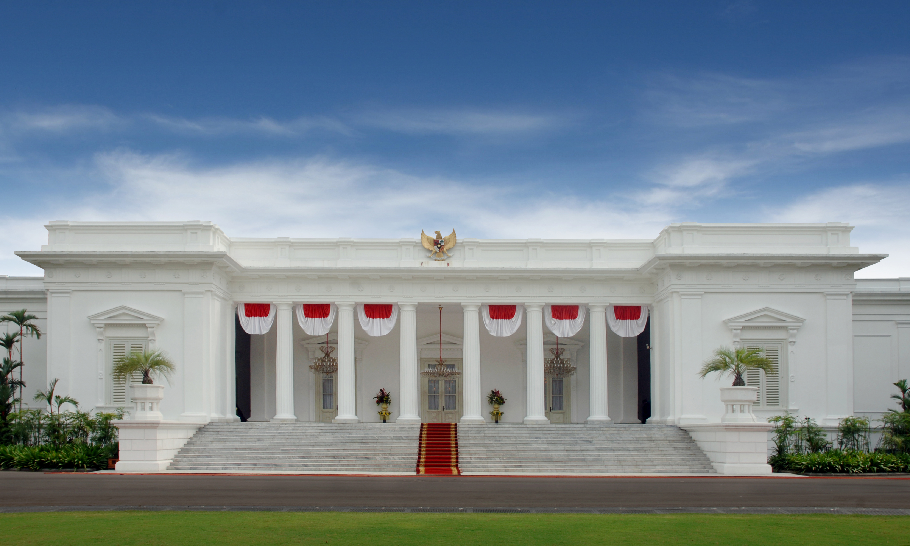
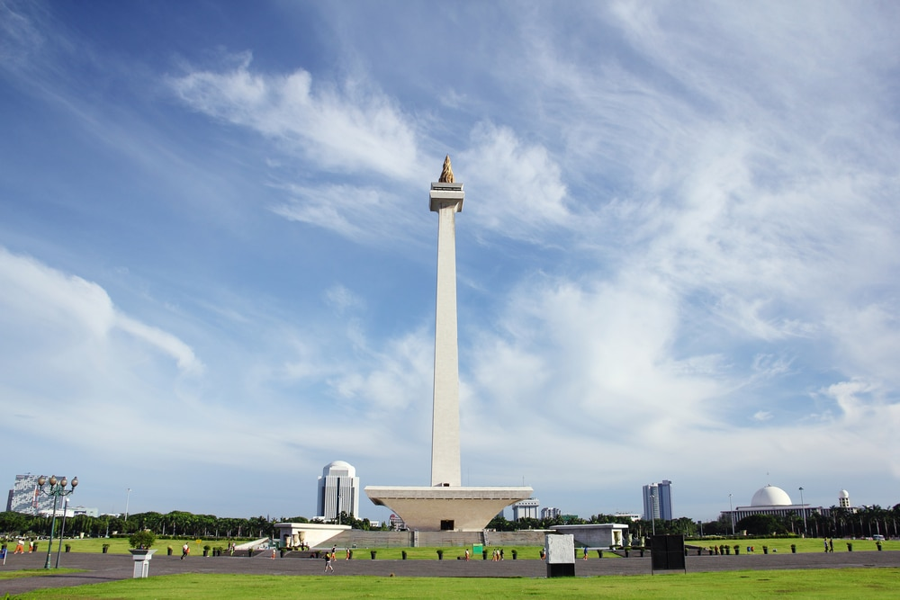
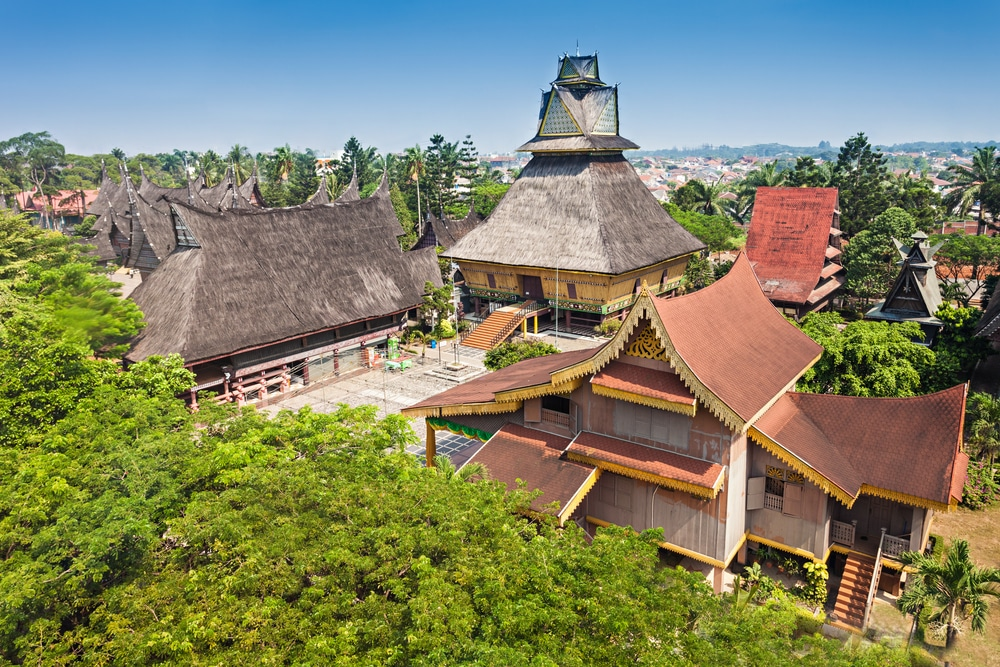
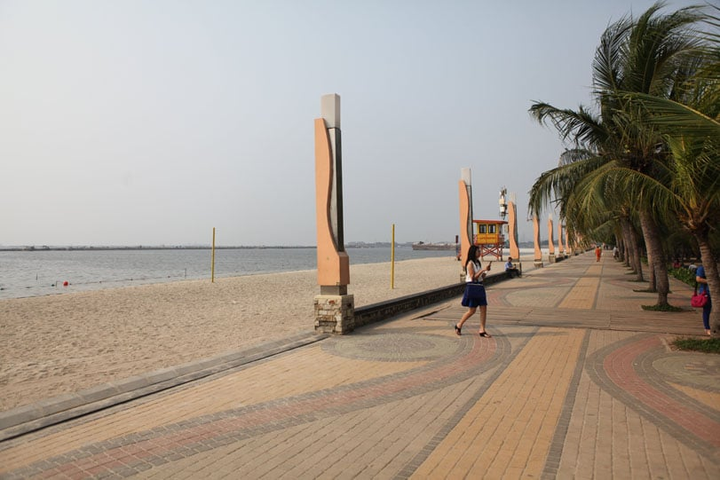

Alot of people moving around in Jakarta. Most of Jakarta resident aren't born in Jakarta. Alot of people moving to Jakarta to find job opportunities, work, even just for travel. In Indonesia, there's a major difference between Jakarta and other provinces.Many tourists treat Jakarta as an entry and exit point to Indonesia, but if you are passing through the city and have some time to spare then there are a wide range of attractions to enjoy from quirky museums to a variety of national monuments. Jakarta is also a great place to learn more about Indonesia’s complicated history, and you can visit a variety of culturally and historically significant locations such as the old town and the port which will give you a glimpse of how the city would have looked in past times.s well as harking back to the days of old, Jakarta is one of the most modern cities in Indonesia, and you can spend time embracing this cutting edge side to the city at its famous malls, bars, and restaurants. Maybe people think that Jakarta is too crowded and loud, but alot of unique and variety place that attracts people traveling to Jakarta
Istana Merdeka
Istana merdeka sits in the middle of DKI Jakarta and the presidential place of Indonesia. This place is the main Indonesian President residential. Although it's not open for public, we can still admired the beauty and we can admiring the exterior of the palace as one of the most historical and political place in the country.
Click Here!Monument National
Monument National is located in the most center place of all DKI Jakarta. It is the famoust monument in Jakarta and stand proud as the symbol of independence of Indonesia in 1945. Inside Monas, we can see the history of Indonesia's Independence and on top of it, it can afford to give us view of Jakarta all direction of the city
Click Here!Taman Mini Indonesia Indah
Ever wonder how 17000 island and 26 profince culture in one place? This is the place! Taman Mini Indonesia Indah or TMII is the most dense place in Indonesia for tradition and local traditional home. TMII as the overview of what kind of culture in Indonesia not only have traditional homes, but also about their tradition, costume,and way of live. Totally recommended if tourist want to experienced what is Indonesia
Click Here!Ancol Beach
You might not imagine that a big city like Jakarta has a beach but it does in the form of Ancol Beach which is part of the wider Ancol Jakarta Bay City. The beach here consists of a strip of golden sand that skirts along the sea front and although this is technically a public beach you will have to pay an entry fee to enjoy the facilities. There are a number of swimming pools along the shore line and you can recline on a rented sun longer and enjoy the relaxed atmosphere outside of the city center. There are also a range of other attractions in the same complex such as a Sea World and a water park.
Click Here!Kota Tua

Kota Tua also goes by the name Old Town Batavia and is one of the most historically significant parts of Jakarta. As you walk around the area you will find pretty architecture that dates from the Dutch colonial period and you can also visit the cobbled central town square which is the signature feature of the area. This is seen as the cultural heart of the city and many artists and photographers gravitate here to take in the relaxed atmosphere and old world feel, and the area is also studded with cafes so you can have a drink and enjoy the surroundings.
Click Here!Source: thecrazytourist